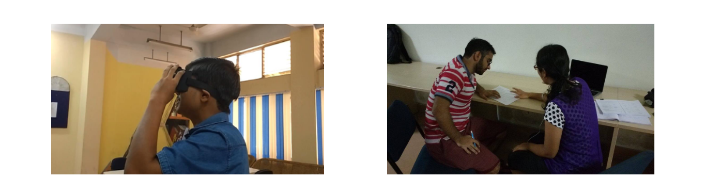
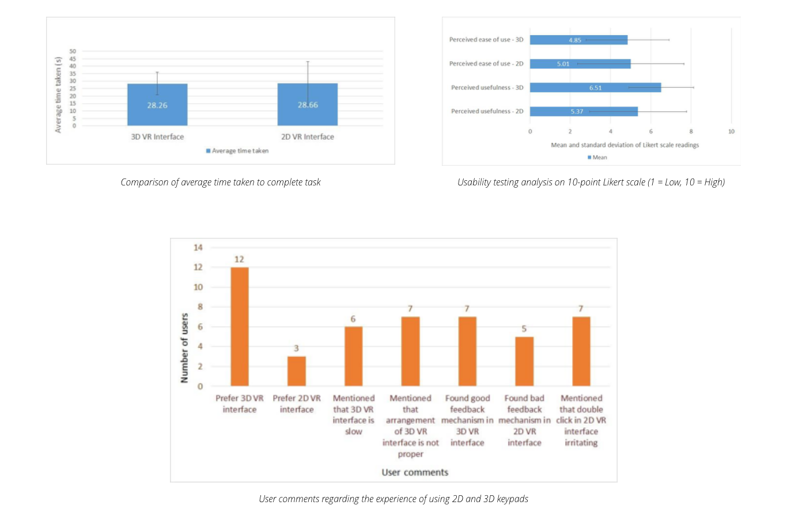
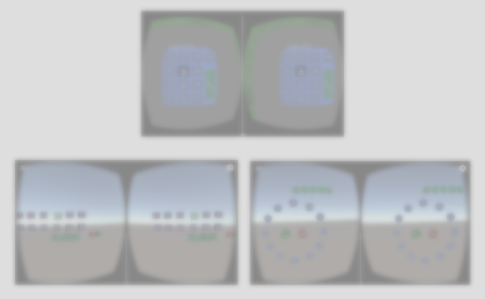

EVERYDAY PROBLEMS (US context)
- Driving
- Obesity
- Air delays
- Drug addiction
- Fire safety
- Student debt
- Mental illness
- Retirement
- Savings
- Credit fraud
- Theft
- Work-life balance
- Discharged mobile phone
USE CASE
Solo traveller
Seth is a solo traveller. He often takes vacation from his job and goes off to wander around places he loves outside the city. He is a really
busy person juggling between office and work. Since it's very difficult for him to take time out and plan a trip itself, he tends to forget his power
bank or often finds it discharged when he makes imprompto plans. He is proficient in technology and finds mobile phone an effective tool while travelling. Since he travels solo, a discharged phone poses a threat to his travel security. Following are the possible problems he might face in such a scenario:
- Internet surfing
- Understanding directions
- Call people when in emergency
- Travel itinerary
- Social connectivity
- Travel options - cab
- Searching for places around
- Digital payment options
PROBLEMS FACED

EXPERIMENT DESIGN
In a 2D mobile interface, user has a reference and a defined boundary to work on, whereas in a 3D spatial environment, there is no such reference and boundaries are unlimited. In order to understand the difference of using a 2D GUI based VR interface and a 3D elements based VR interface, variants of a simple mobile keypad were tested. These interfaces were tested using gaze-based input through head movement.
- Independent variables:
- Three VR interfaces of spatial mobile keypad
- Past experience of participants in VR
- Dependent variables:
- Time
- Perceived ease of use
- Perceived usefulness
- Instruments:
- Clock
- Questionnaire
- VR headset
PROTOTYPES
Softwares used: Unity3D, Vuforia SDK, Google SketchUp
A VR based application was developed for Google cardboard. This comprised of a 2D and a 3D based keypad interface.
1. The 2D keypad interface was inspired from the conventional mobile keypad.
The 2D keypad includes flat 2D keys, similar to conventional mobile keypads. Numeral data entry input is done via gaze pointer through head movement in the VR environment. Pointing at a number key by directing gaze pointer results in that number appearing on the top display panel. The method is similar to pressing a number on a real mobile keypad. A green call button has to be gaze pointed upon completion of number dialing by the user.
2. The 3D keypad interface was designed with 3D elements (cubes) in VR
In 3D keypad, 3D cubes are used as keys for dialing a number. These cubes are spatially arranged in a random order in VR environment. Gaze pointer is integrated into the application. Pointing a key (cube) using gaze pointer animates it to reach a position forming a straight line with subsequent pressed keys, all arranged in front view (top panel). Once the number is animated to the top panel, a similar number key reappears in its position. This is done to incorporate double press of a number. A call button is present in line with the above arrangement, pointing at which indicates completion of number dialing task.
USER STUDY
Type: Within group study
Users: 15
Age: 18-22yrs
Experience: Users were proficient in interacting with smartphones
Protocol analysis (Think aloud process) was conducted via task-based experiment. Users were evaluated via specific questionnaires and semi-structured interviews. Each user were given both the interfaces to test and compare. Time, perceived ease of use and usefulness were the key parameters tested for. User feedback highlighted various issues, some of which include problems with gaze pointing, interaction based issues in dealing a number, system visibility, etc.
FINDINGS
Since the 3D arrangement of numbers was random and we are studying ways of arranging the number keys and other buttons in space, users found it difficult to adapt to the new environment. However once adapted they could perform the assigned task of pressing a telephone number in the 3D GUI faster than the 2D interface. In the case of 2D VR interface , users were comfortable with the arrangement since it was similar to what they are currently using where as in the case of 3D they had to adapt to the new spatial keyboard arrangement. Users expressed different views about the two interfaces. Some felt 2D keypad interface adaptive whereas others felt it boring and time consuming. Users expressed higher likability factor towards the 3D VR interface. In the 3D VR interface, the number keys, when pressed, animated and floated above in space to form a horizontal row. Users found this interface playful and enjoyable to use. Six users (N=6) mentioned that the animation caused the 3D VR interface to be slow in response. Seven (N=7) users stated that arrangement of 3D VR interface was randomized and difficult to use. Results show that perceived ease of use is higher in case of 2D VR interface. Since the users are used to the 2D keypad interface, they find it easier to use in comparison to 3D VR interface. In case of 3D keypad interface, better arrangement of number keys would lead to increase in perceived ease of use.
POST-EXPERIMENT
Inferences drawn from this study were used to develop further prototypes more usable for the users. These prototypes were tested for comparative analysis with 30 users with respect to time, workload and usability assessment. This experiment cannot be shared as the research paper is under the process of publishing.
